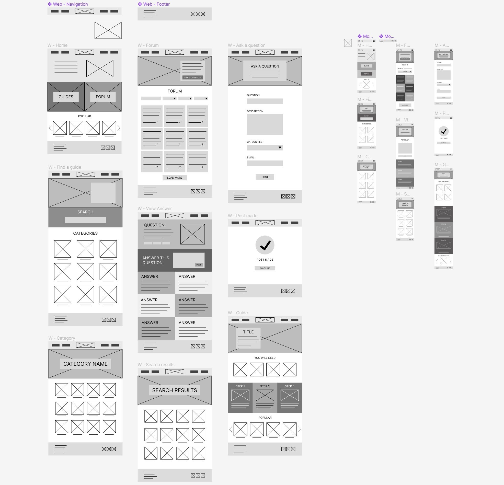

Today's lecture discussed colour theory in web design, particularly the importance of contrast. Having contrasting colours allows elements to stand out and create hierarchy to the page. It also makes the page look nice, as long as the colours don't clash). Contrast can come from lightness, saturation and opposites on the colour wheel. One new thing I learnt today was about colour dominance - having lots of variation in the saturation of colours. I think this is a very effective technique and is something I should utilise in my website. It will make the most important elements on my page stand out, such as the call to action buttons, so that the users don't have to hunt for important information.
The activity for today was to make a copy of the grid layout shown in the slides. After looking back at the tutorial video on how the grid layouts worked (as it had beena while since I had first watched it) I managed to get the layout quite easily. However I did get a bit stuck with getting the middle row of columns to work. I realised thought that I was missing the 'display: grid;' line of code, and once I had put that in it all worked fine. This skill will be particularly useful when it comes to coding my website as I will be able to make even and effective grids that will be responsive to different screen sizes, which is very important since my website is going to have a very grid-based layout.


After completing my sketches over the break, in today's class I began creating my blockframes on Figma. I transfered the layout directly from my sketches.
Next, I created a moodboard to get an idea of what kind of colours I wanted to use for my website. I decided on using blue as the main colour for my website as it has been found to help people learn/focus better and is also quite calming and sparks creativity. To contrast, I have chosen yellow as my secondary colour to help highlight elements and add an optimistic feeling.
I then started to add these colours to my blockframes to start to build up my hi-fi prototype. I have chosen to add a beige colour as another colour option that is less bright to help distinguish sections. I have tried to follow the Law of Common Region to help group elements to make the layout even easier to follow. I am not 100% happy with the colour placements yet. I think the blue might be too pale as there is quite a low contrast dominance. I might use a darker shade in my next iterations.